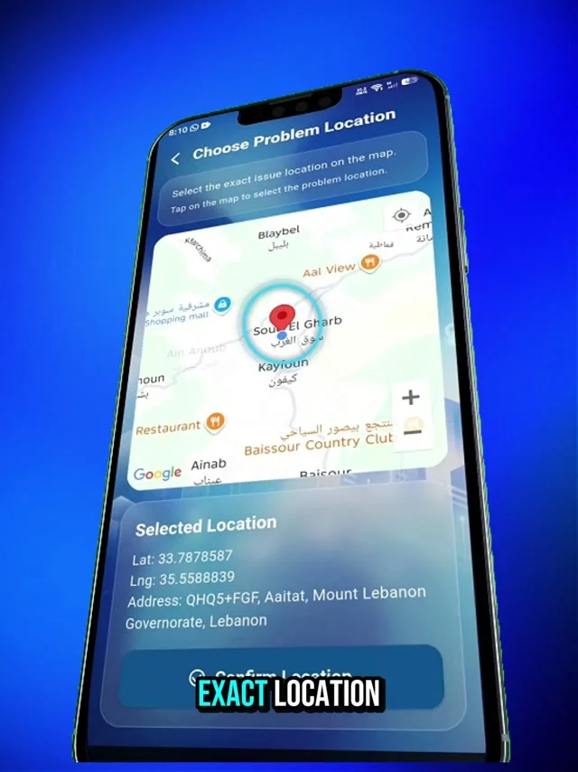
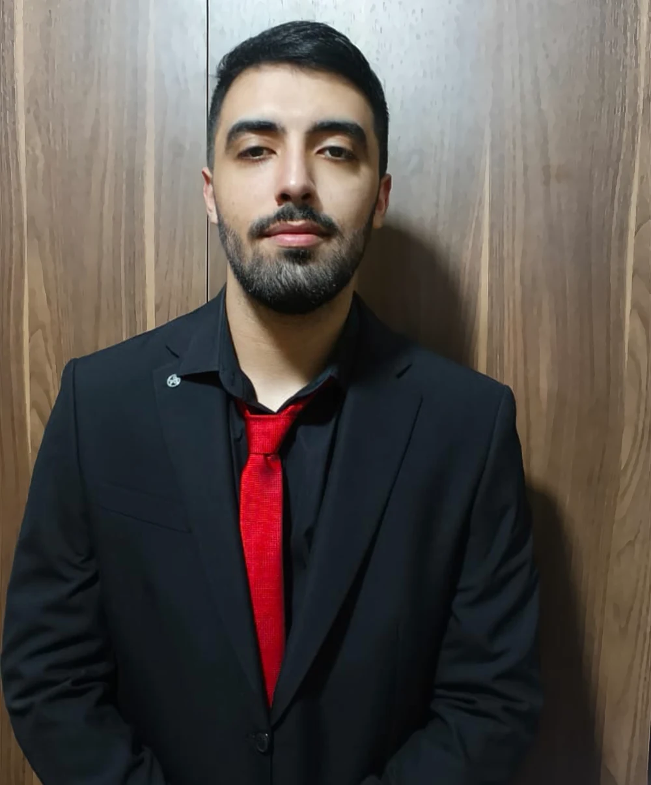

Editing & finish
Visual storytelling, pacing & retiming, color grading, audio-video synchronization.
THE PORTFOLIO OF DANIEL RAWDA

01 / PRESS PLAY
A closer look at the cut.
One project. Every detail.
Playback unavailable. Open the video directly.
FEATURED WORK / 001
An app presentation using animated phone mockups, interface details and typography.
02 / THE COLLECTION
Every frame has a purpose.
Find your next favorite cut.
Entertainment edits, animation studies and promotional content. Project titles describe the supplied work.

DANIEL RAWDA LEBANON03 / A LITTLE ABOUT ME
I'm Daniel. An editor with a technical mind and a love for visual storytelling.
I’m a video editor and motion graphics designer based in Lebanon, with over four years of experience creating short-form and cinematic content. My work brings together kinetic typography, 3D transitions, VFX and a considered sense of pace.
With a BSc in Computer Science from the University of Balamand, I also bring scripting and generative AI into my workflow, building tools that make more room for the creative work.
04 / TOOLS OF THE TRADE
Creative instincts.
Technical precision.
The story, the rhythm, the final cut.
Motion, compositing and visual effects.
Visual assets and supporting graphics.
Platform-ready short-form content.
Good tools. Better stories.
STRUCTURE → RHYTHM → FINISHVisual storytelling, pacing & retiming, color grading, audio-video synchronization.
Logo animation, kinetic typography, particle effects, compositing, 3D camera tracking & animation.
AI avatars, lip-sync rendering, custom scripting and automated asset pipelines.
ElevenLabs · HeyGen · Adobe Firefly · Seedance · Google Omni Flash
05 / EXPERIENCE
Creative work, backed by a technical foundation.
FREELANCE / SELF-EMPLOYED · LEBANON
Creating 3D logo reveals, kinetic typography, particle-driven motion graphics and VFX for fitness, promotional and entertainment content.
Developing AI avatar content pipelines and custom camera-angle scripts, with final edits and color grading in Premiere Pro and CapCut.
CIS COLLEGE · KHALDE, LEBANON
Edited projects in Premiere Pro and After Effects, refined visual flow and audio-video synchronization, and designed lower thirds and promotional graphics in Photoshop.
Collaborated on creative briefs and delivered finalized assets in a fast-paced on-site environment.
06 / ALWAYS LEARNING
UNIVERSITY OF BALAMAND
Graduated June 2026
Engineering thinking.
Creative application.
07 / THE CREATIVE PROCESS
A simple creative framework.
A purposeful finish.
Understand the story and the creative objective.
00:00:00Build the structure, pacing and rhythm.
00:00:10Shape the motion, transitions, color and sound.
00:00:20Export polished content for the intended platform.
00:00:30YOUR NEXT STORY STARTS HERE
08 / GET IN TOUCHHave a project in mind?
Let's bring your vision to life.